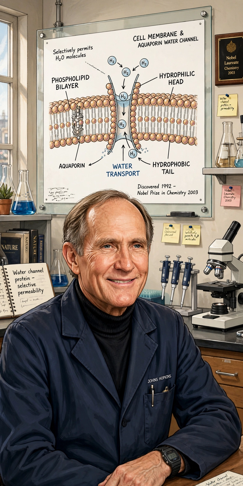

Peter Courtland Agre (born January 30, 1949) is an American physician, molecular biologist, and professor at Johns Hopkins University. He shared the 2003 Nobel Prize in Chemistry with Roderick MacKinnon for his discovery of aquaporins, the protein channels that transport water across cell membranes.

| Born | January 30, 1949, Northfield, Minnesota, U.S. |
|---|---|
| Education | Augsburg College (BA); Johns Hopkins University (MD) |
| Known for | Discovery of aquaporins |
| Awards | Nobel Prize in Chemistry (2003) |
| Fields | Molecular biology, medicine |
| Institutions | Johns Hopkins University; Duke University |
Agre was born in Northfield, Minnesota, to a Norwegian-American mother and an American father. He earned his BA in chemistry from Augsburg College in Minneapolis and his MD from the Johns Hopkins School of Medicine in 1974. After clinical training in internal medicine and hematology, he joined the Johns Hopkins faculty.
While studying Rh blood group antigens in red blood cells, Agre's laboratory serendipitously isolated a 28-kilodalton membrane protein, initially called CHIP28. In 1991–1992, experiments expressing the protein in frog oocytes showed the cells rapidly swelled and burst in dilute solution, demonstrating that the protein was the long-sought water channel of the cell. The protein was renamed aquaporin-1 (AQP1). The discovery explained how cells regulate water movement and opened research into a family of aquaporins involved in kidney function, brain edema, and other physiology.
Agre served as vice chancellor for science and technology at Duke University (2005–2007) before returning to Johns Hopkins, where he became director of the Johns Hopkins Malaria Research Institute in 2008. He has been active in science diplomacy, including visits to North Korea and Cuba, and served as president of the American Association for the Advancement of Science.
In 2008 he briefly explored a run for the United States Senate from Minnesota but declined to pursue the nomination.
See also: Aquaporin · Nobel Prize in Chemistry · Roderick MacKinnon